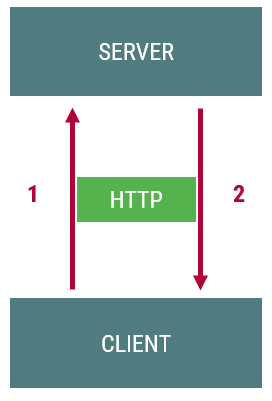
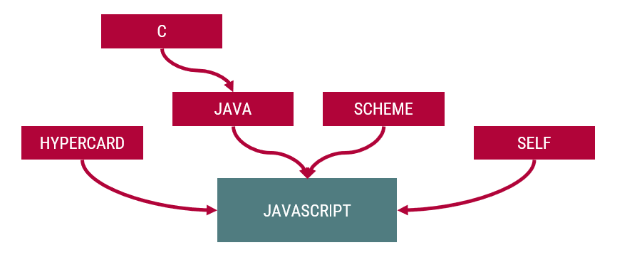

Webprogramozás
Visnovitz Márton
egyetemi tanársegéd
visnovitz.marton@inf.elte.hu
Horváth Győző
egyetemi docens
horvath.gyozo@inf.elte.hu
1117 Budapest, Pázmány Péter sétány 1/c., 2.408
Tel: (1) 372-2500/8469
STATIKUS ⚡ DINAMIKUS
Statikus weblapok készítése: Webfejlesztés
Web: kliens és kiszolgáló kommunikációja
HTTP: a kommunikáció protokollja
Kliens kérést intéz a szervernek
Szerver válaszol
A kliens feldolgozza a választ

A ZH-k esetében 1 hiányzás megengedett (pótolni kell)
Stages: 0, 1, 2, 3, 4 → szabvány
Szerkesztők, böngészők, eszköztárak, dokumentáció
Tetszőleges modern kódszerkesztő használható
console)A JavaScriptnek szüksége van egy futtató környezetre
<script> tag, bárhova rakhatjuk<script> tag src attribútumával töltjük be<!doctype html>
<html>
<head>
<meta charset="utf-8">
<title>Webfejlesztés 2.</title>
<script>
//JavaScript kód helye
</script>
<script src="jskod.js"></script>
</head>
<body>
<script>
//JavaScript kód helye
</script>
<p>Hello világ!</p>
<script src="jskod2.js"></script>
</body>
</html><!doctype html>
<html>
<head>
<!-- ... -->
</head>
<body>
<!-- ... -->
<script src="kod.js"></script>
</body>
</html>Alapok

#include <iostream>
using namespace std;
int main() {
//declaration
const int n=5;
double x[]={1,3,5,7,9};
double s;
//process
s=0;
for(int i=0; i<n; i++) {
s=s+x[i];
}
//write output
cout<<"Sum: "<<s<<endl;
return 0;
} //declaration
const x=[1,3,5,7,9];
let s;
//process
s=0;
for(let i=0; i<x.length; i++) {
s=s+x[i];
}
//write output
console.log('Sum: ', s);a = 'alma';
a = 12;
a == '12'; //true<script> blokk futása megáll<script> blokk után folytatódik az oldal betöltésemain)let a = 12 // --> let a = 12;
a = a + 1 // --> a = a + 1;Szám
Nagy szám
Szöveg
Logikai
Undefined
Number
BigInt
String
Boolean
undefined
Objektum
Tömb
Függvény
Object
Array
Function
Adott típus megjelenési formája
// Logikai literál
true
false
// Szám literál
12
12.34// Szöveg literál
'Szöveg'
"Szöveg"
`Szöveg`
`Tetszőleges ${kifejezés}`
'Idézőjelben "így" macsakörmölök'
"Macskakörömben 'így' idézek"
'Idézőjelben \' idézőjel'
"Macskakörömben \" macskaköröm"
'Escape: \t \n \\ 'varlet, const kulcsszóval deklarálunk új változótlet nev = 'Győző'; // 'Győző'
let masik; //undefined+, -, *, /, %, ++, --, unáris -, unáris +=, *=, /=, %=, +=, -=, stb.===, !==, ==, !=, >, >=, <, <==== és !== típus és érték szerint== és != érték szerint (automatikus konverziók)12 == '12' // true
12 === '12' // false&&, ||, !+, +=&, |, ^, ~, <<, >>, >>>? : feltételes operátor, több kifejezés végrehajtása egy utasításban, visszatérési értéke az utolsó kifejezés// Elágazás
if (felt) {
utasítások
}
if (felt) {
utasítások
} else {
utasítások
}// Többirányú elágazás
switch(kifejezés) {
case érték1:
utasítások
break;
case érték2:
utasítások
break;
default:
utasítások
}// Ciklusok
while (felt) {
utasítások
}
do {
utasítások
} while (felt);
for (let i=1; i<=n; i++) {
utasítások
}Függvények
int factorial(int n) {
int f = 1;
for (int i=2; i<=n; i++) {
f *= i;
}
return f;
}function factorial(n) {
let f = 1;
for (let i=2; i<=n; i++) {
f *= i;
}
return f;
}// függvénydeklarációó
function add(a, b = 3) {
return a + b;
}
// függvényhívás
add(40, 2) // 42
add(10) // 13
add(50, 20, 10) // 70
add() // NaN// függvénydeklaráció
function add(a, b) {
return a + b;
}
// függvénykifejezés
const add = function (a, b) {
return a + b;
}
// fat arrow
const add = (a, b) => {
return a + b;
}
const add = (a, b) => a + b;function (a, b) {
return a + b;
}
// or
(a, b) => a + bfunction countA(str) {
let count = 0;
for (const c of x) {
if (c === 'a') {
count++;
}
}
return count;
}
console.log( countA("apple") ) // 1function count(str, fn) {
let db = 0;
for (const c of x) {
if (fn(c)) {
db++;
}
}
return db;
}
console.log(
count("apple", c => c === 'a')
)Tömb
Literálforma: []
// creation
const uresTomb = [];
const tomb = [12, 'alma', true];
// referencing an element
tomb[0]; // => 12;
tomb[1]; // => 'alma';
tomb[2]; // => true;
// length
tomb.length; // => 3const tomb = [12, 'alma', true];
// modification
tomb[0] = 13;
// new element at the end
tomb.push("new");
// new element somewhere (not recommended)
tomb[100] = 'far away';
tomb.length; // => 101
tomb[99]; // => undefined
// deleting (size remains the same)
delete tomb[1];
tomb[1]; // => undefined
tomb.length; // => 101Tömbök tömbje
const m = [
[1, 2, 3],
[4, 5, 6],
];
m[1][2]; // => 6const gyumolcsok = [
'alma',
'korte',
'szilva'
];
//A gyümölcsök kiírása a konzolra
for (let i = 0; i < gyumolcsok.length; i++) {
console.log(gyumolcsok[i]);
}
// for..of ciklus (ES6)
for (const gyumolcs of gyumolcsok) {
console.log(gyumolcs);
}pop(), push(e), shift(e), unshift()
reverse()
splice(honnan, mennyit)
join(szeparátor)
indexOf(elem)
includes(elem)
const t = [1, 2, 3, 4, 5];
t.push(6); // [1, 2, 3, 4, 5, 6]
t.pop(); // --> 6, [1, 2, 3, 4, 5]
t.unshift(0); // [0, 1, 2, 3, 4, 5]
t.shift(); // --> 0, [1, 2, 3, 4, 5]
t.reverse(); // [5, 4, 3, 2, 1]
t.splice(2, 1); // [5, 4, 2, 1]
t.join('###'); // "5###4###2###1"Programozási tételek megvalósítása
forEach: általános ciklussome: eldöntésevery: optimista eldöntésmap: másolásfilter: kiválogatásreduce: összegzés (sorozatszámítás)find: keresés (elem)findIndex: keresés (index)const numbers = [1, 2, 3, 4, 5];
function filter(x, fn) {
const out = [];
for (const e of x) {
if (fn(e)) {
out.push(e);
}
}
return out;
}
const evens = filter(numbers, e =>e % 2 === 0);
// instead
const evens = numbers.filter(e =>e % 2 === 0);function sum(x) {
let s = 0;
for (const e of x) {
s = s + e;
}
return s;
}
// instead
x.reduce((s, e) => s + e, 0);const numbers = [1, 2, 3, 4, 5];
const a = numbers[0];
const b = numbers[1];
// instead
const [a, b] = numbers;
// default values
const [a = 10, b = 20] = [100] // a:100, b:20
// rest
const [a, b, ...rest] = numbers; // --> rest:[3, 4, 5]
// swapping variables
[a, b] = [b, a]
// ignoring
const [a,,b] = numbers; // a:1, b:3
// spread
const a = [1, 2, 3];
const b = [9, ...a, 10]; // b:[9, 1, 2, 3, 10]Objektum
Literálforma: { }
// creation
const uresObj = {};
const obj = {
mezo1: 12,
'mezo2': 'alma',
};
// referencing
obj.mezo1; // => 12
obj['mezo1']; // => 12const obj = {
mezo1: 12,
'mezo2': 'alma',
};
// modification
obj.mezo2 = 'korte';
// extending
obj.mezo3 = true;
// deletion
delete obj.mezo1;
obj.mezo1; // => undefinedconst obj = {
data: 42,
metodus: function () {
console.log('Foo: ', this.data);
},
metodus2() {
console.log('Foo: ', this.data);
}
};
obj.metodus();
obj.metodus2();const obj = {
_data: 42,
get data() {
return _data;
},
set data(value) {
_data = value;
}
};
obj.data = 52;
obj.data; // 52// Computed property names
const prop = 'foo';
const o = {
[prop]: 'something',
['b' + 'ar']: 'new'
};
o.foo; // 'something'
o.bar; // 'new'//Tömb az objektumban
const zsofi = {
kor: 7,
kedvencEtelek: [
'krumplipüré',
'rántott hús',
'tejberizs'
]
};
//Elem elérése
zsofi.kedvencEtelek[1];
// => 'rántott hús'//Objektum az objektumban
const david = {
kor: 4,
cim: {
iranyitoszam: '1241',
varos: 'Budapest',
utca: 'Egyszervolt utca',
hazszam: 63
}
};
//Elem elérése
david.cim.utca;
// => 'Egyszervolt utca'const matyi = {
kor: 1.5,
fiu: true,
cuki: true
}
// Feldolgozás a for..in ciklussal
for (const i in matyi) {
console.log(i, matyi[i]);
}
// Eredmény
// => kor 1.5
// => fiu true
// => cuki true//C++ vector --> JS tömb
const kutyuk = [
'telefon',
'fülhallgató',
'pendrive',
'e-könyv olvasó'
];//C++ struct --> JS objektum
const hallgato = {
nev: 'Mosolygó Napsugár',
neptun: 'kod123',
szak: 'Informatika BSc'
};//Rekordok tömbje
const hallgatok = [
{
nev: 'Mosolygó Napsugár',
neptun: 'kod123',
szak: 'Informatika BSc'
},
{
nev: 'Kék Ibolya',
neptun: 'kod456',
szak: 'Informatika BSc'
}
];//Tömböt tartalmazó rekordok tömbje
const hallgatok = [
{
nev: 'Mosolygó Napsugár',
neptun: 'kod123',
szak: 'Informatika BSc',
targyak: [
'Programozás',
'Webfejlesztés 2.',
'Számítógépes alapismeretek'
]
},
{
nev: 'Kék Ibolya',
neptun: 'kod456',
szak: 'Informatika BSc',
targyak: [
'Programozás',
'Webfejlesztés 2.',
'Diszkrét matematika',
'Testnevelés'
]
}
];const o = {
a: 42,
b: 28,
}
const a = o.a
const b = o.b
// instead
const {a, b} = o;
// renaming
const {a: c, b: d} = o;
// default values
const {a = 10, b = 20} = {a: 42};
const {a: c = 10, b: d = 20} = {a: 42};
// rest
const o = {
a: 42,
b: 28,
c: 12
};
const {a, ...rest} = o; // rest={b:28, c:12}// nested objects
const david = {
kor: 4,
cim: {
iranyitoszam: '1241',
varos: 'Budapest',
utca: 'Egyszervolt utca',
hazszam: 63
}
};
const { cim: { utca }} = davidclass (ES6)class Rectangle {
constructor(height, width) {
this.height = height;
this.width = width;
}
// Getter
get area() {
return this.calcArea();
}
// Method
calcArea() {
return this.height * this.width;
}
}
const square = new Rectangle(10, 10);
console.log(square.area); // 100class – publikus mezőkclass Product {
name;
tax = 0.2;
basePrice = 0;
price;
constructor(name, basePrice) {
this.name = name;
this.basePrice = basePrice;
this.price = (basePrice * (1 + this.tax)).toFixed(2);
}
}